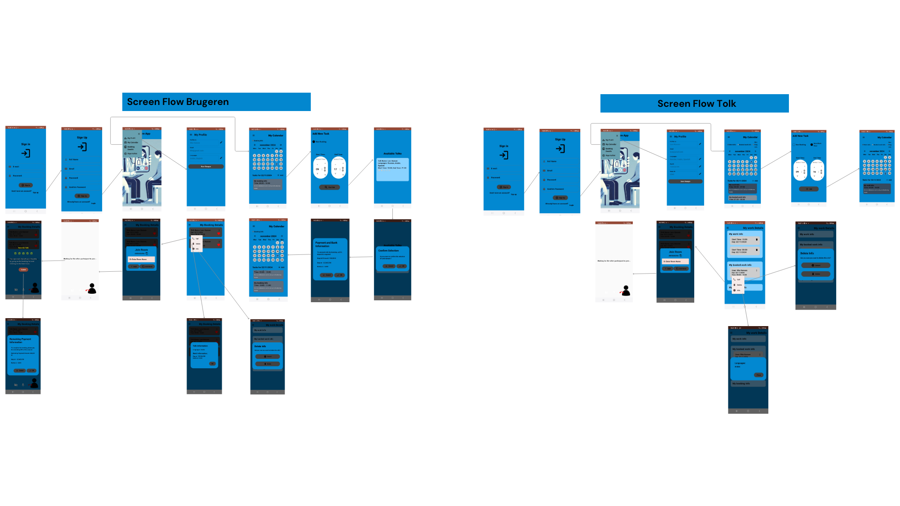

Her kan du se de vigtigste projekter, jeg har lavet inden for Android, web, backend og IoT.
Jeg har både arbejdet med arkitektur, kode, UI/UX og integration til cloud-tjenester.
TolkCare er en Android-app til booking af tolke. Brugere kan finde tolke, vælge dato og tidspunkt,
se deres bookinger og aflyse igen. Tolken kan registrere arbejdstider, se bookinger og få
notifikationer, når nye bookinger oprettes.
UI bygget med Jetpack Compose.
Firebase Authentication til login.
Firestore database til brugere, tolke og bookinger.
Push-notifikationer med Firebase Cloud Messaging.
Voice/video opkald med Agora SDK.

IoT Waste Management
IoT · MQTT · EMQX · .NET · Firestore
IoT Waste Management er et smart affaldssystem, hvor sensorer overvåger fyldningsniveauet i skraldespande.
Systemet kommunikerer via MQTT til en EMQX broker og gemmer data i backend, så man kan optimere tømmeruter.
Et komplet React-baseret administrationssystem til et modelbureau, hvor brugere kan logge ind som
enten manager eller model. Systemet tilbyder CRUD-funktionalitet, jobhåndtering,
brugerroller og integration til en Docker-baseret backend API.
JWT-login og sikker token-håndtering.
Roller: Manager og Model med forskellige rettigheder.
Manager kan oprette modeller, managere, jobs og tilføje modeller til jobs.
Model kan se sine jobs og registrere udgifter.
React SPA med fetch() kald til REST API endpoints.